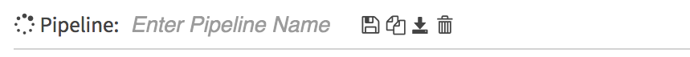
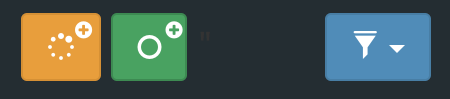
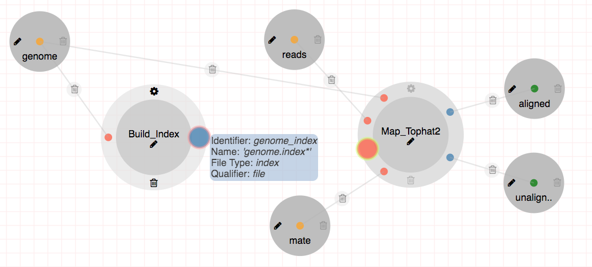
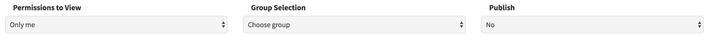

Pipeline Guide¶
This guide will show how to create, edit, delete and share pipelines.
Basics¶
Once logged in, click on the pipeline button in the top left of the screen. You’ll notice Enter Pipeline Name box, just below the Pipelines button.
After entering pipeline name, you will see Saving.. and All changes saved notifications just to the right of the pipeline name box and buttons. In DolphinNext, autosaving mode is active while creating pipelines for ease of use. You may also use “Save Pipeline” button to save your pipelines.
Another way to create new pipeline is clicking orange “New pipeline” button which is located at left sidebar menu.
{kind=link}
Note
You can create a copy of your pipeline by clicking “Copy Pipeline” button and delete your pipeline by clicking “Delete Pipeline” button. While creating your pipeline, you can always check the created nextflow script by clicking “Download Pipeline” button.
Processes¶
Processes can be reached by “Processes” section at the left sidebar menu. Under each menu group, assigned processes are located. You can drag and drop the process name on the workplace area. Process circle will appear as shown in the figure below:

- You will notice several icons on the process circle:
- Settings icon, located at the top, opens “Select Process Revision” window where you may examine the current state of process or you may jump to the other revisions and replace the selected revisions on the workplace.
- Pencil icon which is at the center of the circle, allow you to edit process name which will be placed in the nextflow file as a process name. Therefore process names should be unique in overall pipeline.
- At the bottom of the process circle, bin icon is located to delete current process from the pipeline.
Input Parameters¶
Input files or values which will be used in the process, need to be added by Input parameters circle. Input parameters are located on the top of the Processes section at the left sidebar menu. Similar to adding processes, drag and drop feature is available for Input parameters. When dragging is completed, orange and smaller circle will appear in the workplace as shown in the figure below:

By using the Pencil icon which is located at the left side of the circle, you can edit name of the input parameters. These names will be used while creating variables in the nextflow file, therefore these names should be unique in overall pipeline.
Output Parameters¶
Newly created files that are defined in the Outputs section are selected by Output parameters circle. Output parameters are located just below of the Input parameters at the left sidebar menu and placed into workspace by dragging. The name of the circle determines the name of the published directory which can be edited by clicking pencil icon. In the example below, both aligned and unaligned reads are selected by two separate green circles. Both of outputs will be transferred to separate directories called aligned and unaligned.

Tip
- If you don’t want to keep some of your output files, you may leave output nodes unconnected. Then only files that are selected will be transferred in the published directory.
- In order to transfer two or more outputs into same directory, you can use the same name for Output parameters.
Edges¶
- There are three main reasons for creating edges.
- To establish a connection between inputs and outputs of the multiple processes
- To define input files or values which will be used in the processes
- To select outputs that will be published in the output directory.
This procedure is facilitated by showing available nodes which are ready for connection. The figure below shows an example about this feature: Since mouse is over the output node: genome_index of the Build_index and DolphinNext shows the available node on the Map_tophat2 process by marking.
Important
This filtering is executed by checking file types of the set and file parameters and name of the val parameters. In this example, file type of the selected output node and the marked input node both index.
This feature is also available while connecting input parameters to multiple processes.
Pipeline Header Script¶
This section allows you to add additional inputs, scripts or comments before pipeline starts. This way you may recall same function several times in the other processes.

Adding Pipeline Inputs by Pipeline Header Script¶
You can use pipeline header script to add pipeline inputs which is very much similar to adding dropdown for process options. In order to create inputs, you need to use following syntax in the pipeline header script:
params.variableName = defaultValue //* @dropdown @options:"..."
Note
Please note that you need to use params. at the beginning of variableName. You can define defaultValue with single/double quotes (for strings) or without any quotes (for numbers).
On the run page, these input parameters will be asked separately in the Inputs section as in the image shown at below:
params.genome_build = "" //* @dropdown @options:"human_hg19, mouse_mm10, custom"
params.run_Tophat = "no" //* @dropdown @options:"yes","no"

Autofill Feature for Pipeline Inputs¶
A.Based on Hostname:
DolphinNext allows you to enter hostname specific input parameters by using following syntax:
//* autofill
if ($HOSTNAME == "ghpcc06.umassrc.org"){
<input parameters>
}
//*
Here, $HOSTNAME is DolphinNext specific variable that recalls the hostname which is going to be run. Therefore, in this example, <input parameters> will be filled in case of pipeline is going to run on ghpcc06.umassrc.org. Please check following example in which TrimPath parameter is filled automatically:
//* autofill
if ($HOSTNAME == "garberwiki.umassmed.edu"){
params.TrimPath ="/project/Trimmomatic/trimmomatic-0.32.jar"
}
//*

B.Based on Selected Input:
It is possible autofill based on the selected parameters on the running page. In the following example, path of the program will be changed according to selected pipeline parameter:method:
params.method = "" //* @dropdown @options:"trimmomatic, fastqx"
//* autofill
if (params.method == "trimmomatic"){
params.TrimPath ="/project/Trimmomatic/trimmomatic-0.32.jar"
}
else if (params.method == "fastqx"){
params.TrimPath ="/project/fastqx/fastqx"
}
//*
C.Dynamic Autofill:
In order to autofill parameters that have kind of pattern, you can use dynamic autofill feature. To do so, you need to define variable parts of the pattern by using underscore such as _species or _build. Afterwards, you can define these variable based on if conditions. Finally, you can activate the autofill feature by checking the existance by following syntax:
if (params.variableName && $HOSTNAME){
<input parameters>
}
or
if ($HOSTNAME){
<input parameters>
}
Please check the example below where params.genome and params.genomeIndexPath filled according to selected parameters of params.genome_build and $HOSTNAME:
params.genome_build = "" //* @dropdown @options:"human_hg19, mouse_mm10"
def _species;
def _build;
def _share;
//* autofill
if (params.genome_build == "human_hg19"){
_species = "human"
_build = "hg19"
} else if (params.genome_build == "mouse_mm10"){
_species = "mouse"
_build = "mm10"
}
if ($HOSTNAME == "garberwiki.umassmed.edu"){
_share = "/share/dolphin_data/genome_data"
} else if ($HOSTNAME == "ghpcc06.umassrc.org"){
_share = "/project/data/genome_data"
}
if (params.genome_build && $HOSTNAME){
params.genome ="${_share}/${_species}/${_build}/${_build}.fa"
params.genomeIndexPath ="${_share}/${_species}/${_build}/${_build}"
}
if ($HOSTNAME){
params.TrimPath ="${_share}/Trimmomatic/trimmomatic-0.32.jar"
}
//*
{kind=link}
Autofill Feature for Pipeline Properties¶
You might define hostname specific executor properties and create autofill feature by using following syntax:
//* autofill
if ($HOSTNAME == "ghpcc06.umassrc.org"){
<executor properties>
}
//*
Here, $HOSTNAME is DolphinNext specific variable that recalls the hostname which is going to be run. Therefore, in this example, all <executor properties> will be active in case of pipeline is going to run on ghpcc06.umassrc.org.
Executor Properties:
Five type of executor properties are available to autofill Executor Settings for All Processes: $TIME, $CPU, $MEMORY, $QUEUE, $EXEC_OPTIONS which defines Time, CPU, Memory, Queue and Other Options. See the example below:
//* autofill
if ($HOSTNAME == "ghpcc06.umassrc.org"){
$TIME = 3000
$CPU = 4
$MEMORY = 100
$QUEUE = "long"
$EXEC_OPTIONS = '-E "file /home/garberlab"'
}
//*
{kind=link}
Singilarity/Docker Images:
Four type of image properties are available to autofill : $DOCKER_IMAGE, $DOCKER_OPTIONS, $SINGULARITY_IMAGE, $SINGULARITY_OPTIONS which automatically fills the image path and RunOptions fields of docker and singularity. See the example below for docker:
//* autofill
if ($HOSTNAME == "ghpcc06.umassrc.org"){
$DOCKER_IMAGE = "docker://UMMS-Biocore/docker"
$DOCKER_OPTIONS = "-v /export:/export"
}
//*

Singularity image example:
//* autofill
if ($HOSTNAME == "ghpcc06.umassrc.org"){
$SINGULARITY_IMAGE = "shub://UMMS-Biocore/singularity"
$SINGULARITY_OPTIONS = "--bind /project"
}
//*

Pipeline Details¶
This section summarizes all used processes and input/output parameters to give you an overall view about pipeline.

Permissions, Groups and Publish¶
By default, all new pipelines are only seen by the owner. You can share your pipeline with your group by selecting permissions to “Only my groups”. If you want to make it public, you can change Publish option to ‘Yes’. After verification of the pipeline, it will be publish to everyone.
Copying and Revisions¶
It is always allowed to create a copy of your pipele by clicking “Copy Pipeline” button just to the right of the pipeline name box and buttons. When your pipeline is set to public or it has been used by other group members, it is not allow to make changes on same revision. Instead, new revision of the pipeline can be created and changes could be done on this revision.